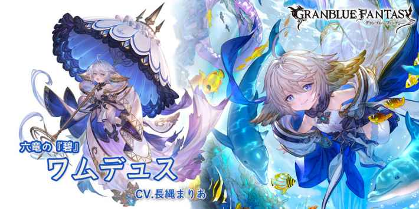

奧義上升量-25%
奧義值最大為200%(奧義值200時才可發動奧義)
ワムデュス
基本資訊
| 定位 | 防禦 |
| 得意武器 | 杖/斧 |
| 種族 | 哈比 |
| CV | 長縄まりあ |
立繪
上限解放前||上限解放後奧義
| ヒドロゾア | |
| 水屬性12.5倍傷害 我方全體水屬性角色受到傷害-5000(1T) |
主動技能
CD:6 |
スターヴィングドレイン |
| 選擇以下一個技能發動 アンビエントドレイン 吸收敵方CT1，吸珠成功時，奧義值+30 吸收我方其他角色奧義值15，自己獲得吸收量4倍的奧義值 CB+20% 賦予自己テンタクル･カルネル效果(無法消除) └發動奧義時，消耗テンタクル･カルネル效果，我方全體無敵(1T) ヴォーテクスアトラクター 自己以外的敵我方強化全消除 賦予自己テンタクル･フォース效果(1T/無法消除) └普攻傷害+50% └必TA └普攻分割成4次傷害 |
|
CD:6 |
イノセントトキシン |
| 敵方單體6次水屬性1.5倍傷害 賦予敵方以下弱體效果 ・麻痺(2T) ・毒效果(傷害5000/180秒) ・劇毒Lv+1(最大10/無法消除) ◆被傷害時此技能自動發動 |
|
| 『碧』の月暈 | |
| 賦予自己『碧』の月暈效果(永久/無法消除) ・防禦力+300% ・弱體效果無效 ・被傷害時奧義值上升量+200% ・回復等同於普攻和奧義10%傷害的HP(最大1000) ◆無法再次發動 |
被動技能
|
ろーどーのよろこび |
| 最大HP+50% 奧義上升量-25% 奧義值最大為200%(奧義值200時才可發動奧義) |
|
|
理外の『碧』 |
| CB發動時，我方全體水屬性角色受到傷害-10000(1T) |